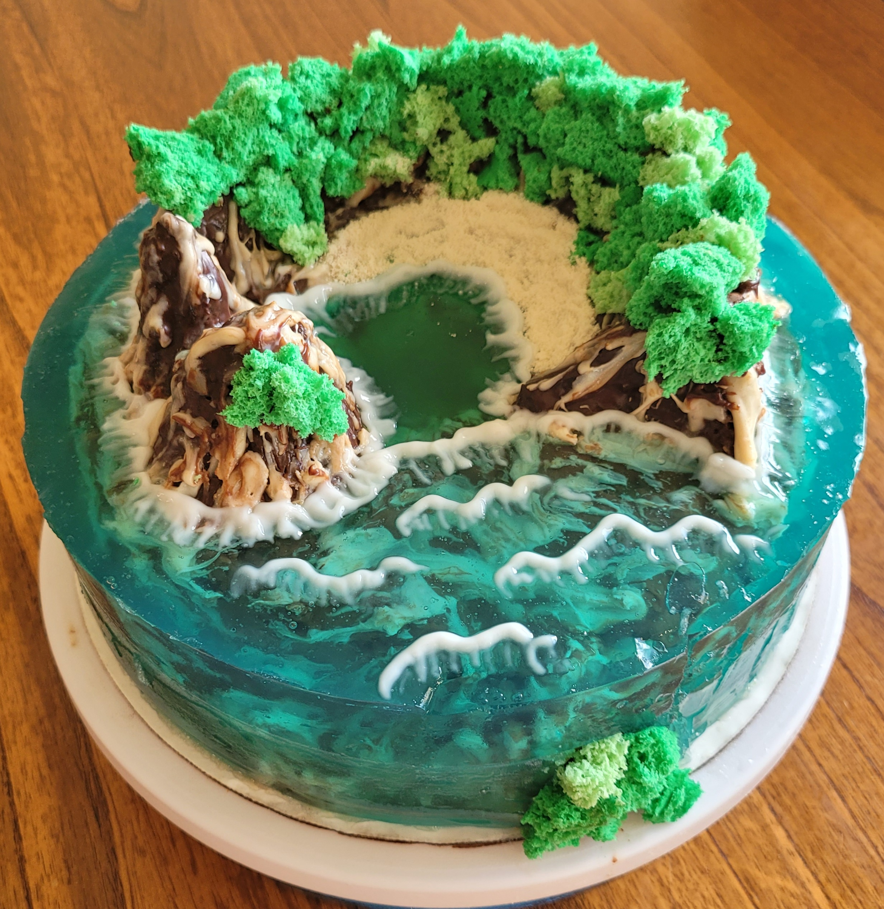
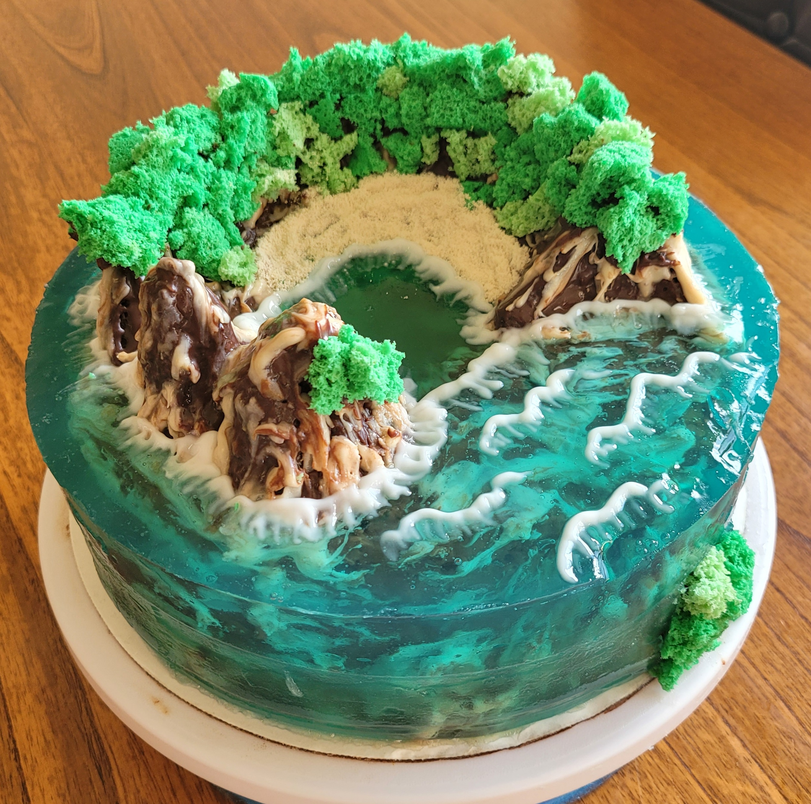
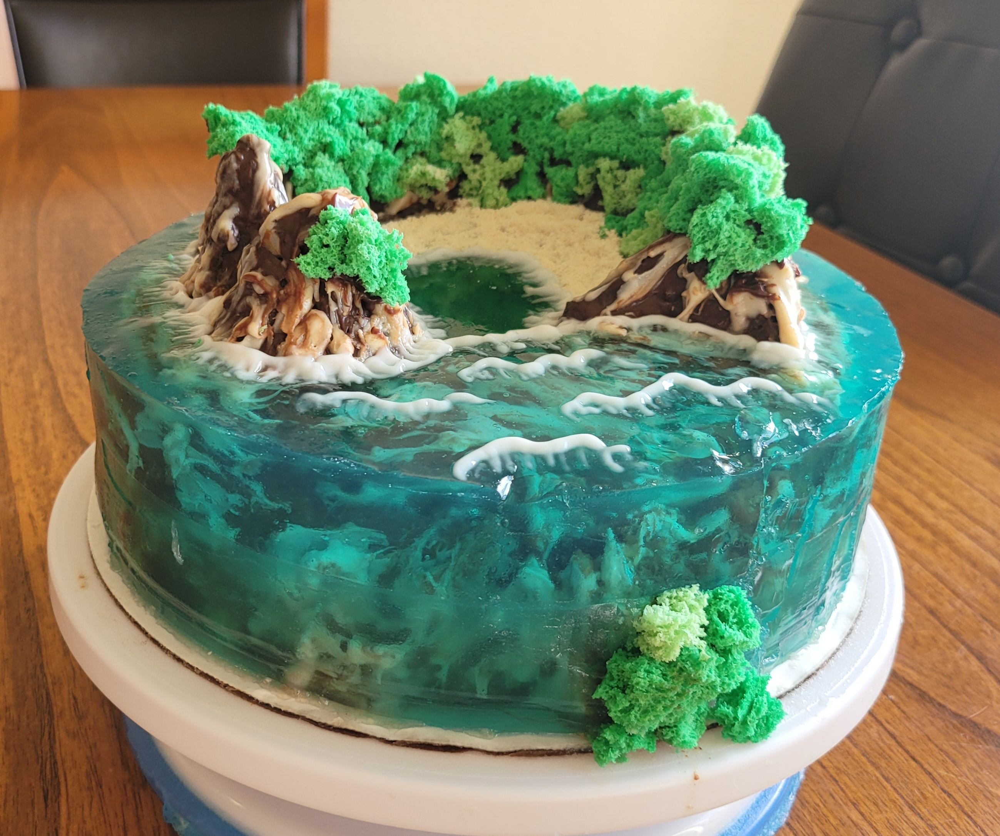
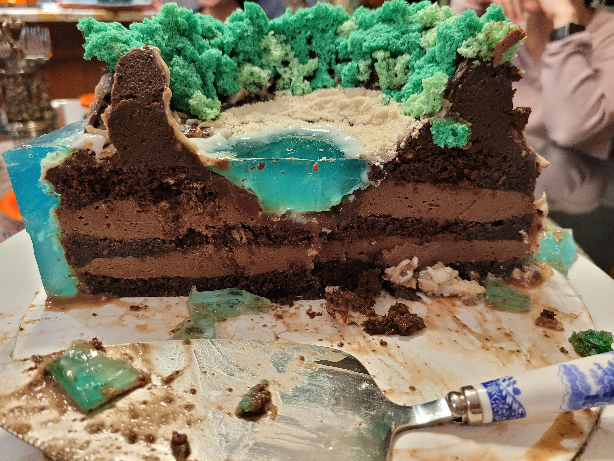
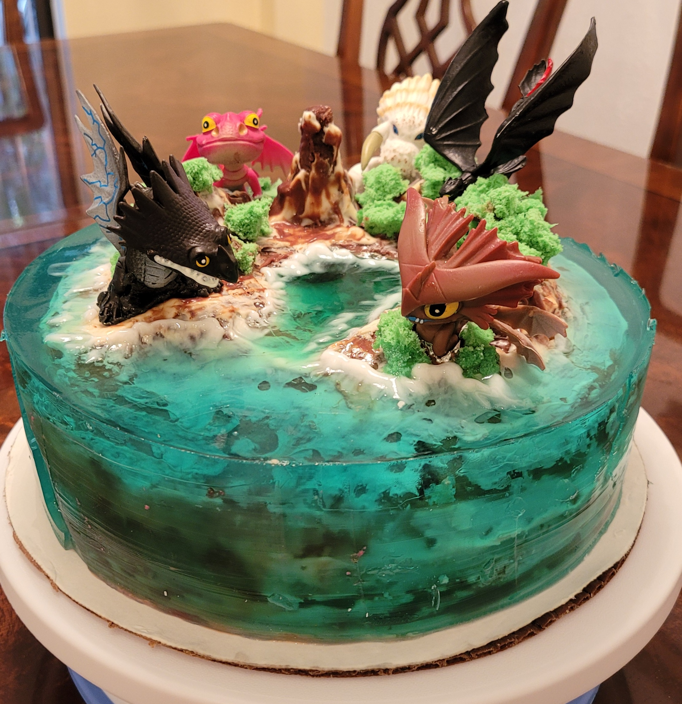

Cake Island





Ingredients:
Ganache:
- 200 g dark and white chocolate + 100 g cream (I have 15% fat) Pour hot cream over chocolate, after 2-3 minutes. mix well.
Jelly:
- Gelatin 60 g + 300 g water.
- 1.2 l. water + 200 g sugar.
Biscuit moss:
- 1 egg
- flour -25 gr
- sugar-12 gr
- honey-30 gr
- baking powder -5 gr
- dye
Direction:
- Chocolate in a water bath or in a microwave, add heavy wipping cream and beat until the mass brightens, about 5 minutes. Ready ganache can be stored in the freezer. This portion is enough to cover a cake weighing 2-3 kg. Cover the cake with discreet movements first with dark chocolte, then with white one.After we smeared the cake with ganache, put it in the refrigerator for 10 minutes. Next, spread it with ganache again so that the part of the cake that will be covered with jelly is completely in ganache, without gaps. We put it in the refrigerator until it hardens.
- We decorate the mountains with cookies, confectionery moss, or whatever your heart desires. let's get the jelly out: Gelatin pour 350 gr. water from the total amount to swelling. The rest of the water, sugar and lime. Heat acid until sugar dissolves. Dissolve the swollen gelatin in the microwave and pour into the slightly cooled syrup. Add dye, mix well. Cool down so that it is not warm. Pour the jelly cake, the ring is about 1 cm wider than the cake itself. We put it in the refrigerator until it hardens. My cake is 17 cm d. If you have more, then you need to cook more jelly.
- Beat the egg with sugar, add honey, flour with baking powder, dye. Pour 1/3 of the dough into a paper cup or into an ordinary tea cup and put it in the microwave for 1 minute. Microwave power 1000 W.